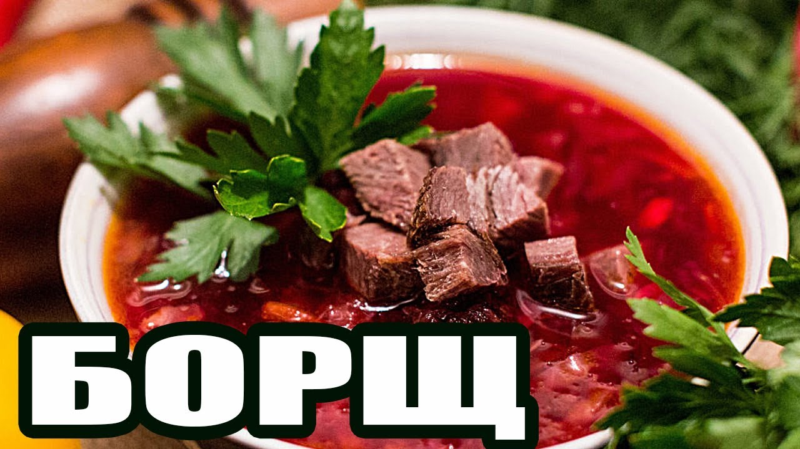

Рецепт Борща

Бытует шуточное мнение, что пока молодая хозяйка не научилась готовить классический борщ – замужем ей делать
нечего. Конечно, это шутки, однако умение готовить вкусный и наваристый борщ очень ценно.
Готовый борщ обязательно подают со сметаной, которая отлично подчеркивает вкус овощей. Присыпают черным перцем,
и свежей зеленью. На стол ставят сухарики или ломтики свежего бородинского хлеба, можно заменить украинскими
пампушками.
Обозначим формулу приготовления традиционного борща. Первым делом варим бульон, следом готовим зажарку,
закладываем и провариваем овощи. Общее правило, борщ должен томиться на медленном огне, но никак не кипеть. По
готовности даем борщу настояться, желательно выждать около 30-40 минут. Неоспоримый факт — спустя сутки после
приготовления, вкус борща будет более насыщенный и яркий.
Ингридиенты
- Для бульона: 1½–2 л воды, 400–500 г свинины или говядины на кости.
- Для зажарки: 2 небольшие свёклы, 1 средняя морковь, 3 средние луковицы, 4–5 столовых ложек растительного
масла, щепотка лимонной кислоты, немного столового уксуса или ½ лимона, 2 столовые ложки томатной пасты./li>
- Для борща: 300 г свежей белокочанной капусты, 4 средние картофелины, соль — по вкусу, 1–2 сушёных лавровых
листа, зелень — по вкусу, 1 зубчик чеснока — опционально, щепотка молотой гвоздики — опционально, щепотка
молотого чёрного перца — опционально.
Приготовление
- Сварить бульон. Налить в кастрюлю холодную воду, выложить мясо и поставить на средний огонь. Перед
закипанием снять пену. Когда жидкость закипит, накрыть кастрюлю крышкой и варить на медленном огне
час-полтора.
- Сделать зажарку. Вымыть и почистить свёклу, морковь и лук. Свёклу натереть на крупной тёрке, а морковь — на
средней. Лук нарезать небольшими кубиками. Налить масло в сковороду, включить средний огонь. Обжаривать лук
и морковь, помешивая, около 5 минут. Затем выложить свёклу. Добавить к ней лимонную кислоту, уксус или сок
лимона. Готовить зажарку ещё 5 минут. После этого добавить томатную пасту, перемешать и оставить на огне ещё
на 5–7 минут.
- Собрать борщ. Когда бульон сварится, вынуть из него мясо. Пока оно остывает, засыпать в кастрюлю
нашинкованную капусту. Через 5–10 минут добавить нарезанный соломкой или кубиками картофель. Пока варится
картофель, отделить мясо от кости и нарезать кубиками. Вернуть его в суп. Посолить по вкусу. Добавить
зажарку и перемешать. Закинуть лавровый лист и мелко порубленную зелень. Накрыть кастрюлю крышкой и варить
ещё 5–7 минут. Для аромата можно добавить в кастрюлю немного измельчённого чеснока, молотой гвоздики или
чёрного перца. Оставить борщ под крышкой настаиваться 5–10 минут. Перед подачей можно добавить зелень и
сметану.
Домой